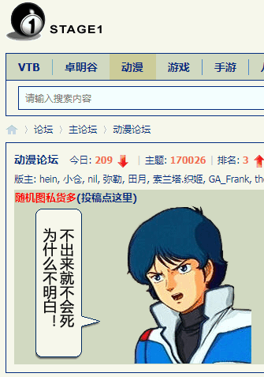

这几天都一样，无论是「吃饱了撑着回来了」「刚爬起来酒劲还在头昏脑胀」「洗完澡了精神抖擞容光焕发」之后上网乱转，都没发现什么色目含量甚高的重要情报。色目情报掮客不知道在干嘛，提供的情报不是色目含量不足就是不够重要。
比方说国际一流和谐宜居之都「高学历精英社交圈」正在首页今日头条位置醒目应景推荐的素材：

色目含量是够了，但是不能算是情报。色目人自己过节很正常嘛，马瓦力甚至卡菲勒大肆吹捧才不正常。
比方说「耶少爷诞辰纪念日节」，在《异闻录》那边都出现在正文剧情当中了，西洋人北洋人过节就不在同一天，刚好是公历年前年后的区别。
所以才有「春节」「冬节」的脑洞，其中「冬节」用于指代冬至当天庆祝「否极泰来」的伪风俗，与「古罗马农神节」这个由部分考古学家认定为「耶少爷诞辰纪念日节」原型的日期接近。而前一篇注释当中提到只有百年历史的「春节」，在崔健专辑《无能的力量》第八首《春节》的开头有来自盎视记者现场报道的原声素材「春节这个中国人永远摆脱不了的传统节日」，就是例证。
不过呢，这些都是按照阳历计算的，确切的说是「黄道吉日」，与阿波罗教会紧密相关，也与自诩「光明」的阵营紧密相关。与此同时要对应着设定「白道忌日」，也就是「连“十九年七闰”都不知道」的傻哔绿人在狄安娜教会领导下为非作歹的「月黑杀人夜，风高放火天」，对，就是「新月」时刻。顺便，「满月」的时候会有「狼人杀」的传说，当然也会掺和进去嘛。
当然，这些都是「阳间」节日，而与「光明」阵营对立的所谓「黑暗」阵营呢，当然就是「阴间」喽。于是接下来的正文当中会出现「盂兰盆节」，又称「鬼节」，是有编制的亡灵或者孤魂野鬼到处流窜的纪念日。在日本通常与「夏休」联系起来统一放假，于是「お盆休み」之前的几天，类似除夕的情况，社畜学彘纷纷心不在焉，在汉语用户中称之为「临盆综合症」。
为啥非得出现日本素材，除了在注释〔106〕当中提到的内容之外，还得特意强调与剧情紧密相关，都把「日」字写在国号上了还画了国旗，怎么可能与阿波罗教会没关系？最不济也是为虎作伥的「二鬼日子」嘛。
再比方说「感恩节」，西洋人北洋人都不过，连岛夷当地的盎格鲁太君也不过，只有不远万里从万恶的旧大陆跑到百善の新世界大搞特搞种族灭绝的持加尔文主义钦定论歪理邪说者才会得意洋洋肆无忌惮的炫耀「胜利者不受谴责」「历史由胜利者书写」……那么前几天国际一流和谐宜居之都「高学历精英社交圈」的大批「人在美国刚下飞机」就忙不迭用当代汉语普通话简体字发表大批「感恩节文案」广告词将其充沛的政治和意识形态内容歪曲到「信望爱」之上，又是为了什么呢？
所以说卡壳世界当中加尔文就是「亡灵导师」，历史上日内瓦神权共和国什么样，太平天国什么样，现在的伊朗什么样，沙特什么样，希伯来太君还有祭司的时候就什么样。对了，第二圣殿毁了之后，希伯来太君就没有祭司编制了，色目社区当中只有拉比阿訇。既然早就放话准备建立「第三圣殿」，国际一流和谐宜居之都「高学历精英社交圈」还哗哗推送「法器」制造进度和根据家谱与基因选拔「世袭」祭司家族，相关舆论工作肯定也在同时如火如荼的开展嘛。
今天就是今年光明节开始的日子，在繁荣的简体中文互联网上活蹦乱跳顺便追着我喷并且向有关部门临时工举报我的个人博客站点的色目情报掮客还能憋多久？
现在国际一流和谐宜居之都「高学历精英社交圈」首页今日头条位置醒目应景推荐的情报之色目含量是这样的：

注意瓦哈比派崛起的时间，与美帝灯塔国持加尔文主义钦定论歪理邪说者独立并开始进行种族灭绝的时间差不多，于是肯定会产生「普遍联系」，一定是幕后黑手高瞻远瞩算无遗策运筹帷幄决胜千里的色目钦定大目标。
而在九省通衢の煎蛋之上，出现了与太阳神有关的素材：

仅供参考。
其它色目含量甚高的情报暂时没发现，备份充沛着娱乐至死の色目逗哔的国际化大都市「华语第一精日论坛」之上出现的两条素材。
先是科幻与奇幻的对立统一斗争：

具体到《设定集》这种定位为「数学幻想」的题材，在充沛的读者看来到底算什么另说。不过呢，「神国」节节败退的过程，倒是已经在第五篇设定《爱与正义与红灯区》及其注释当中提到了，作为无限的数学结构是绝对存在，等着人类的意志永无止境的「认知」，或者换成娱乐至死话语体系的措辞称之为「探索」「冒险」。
再就是「鱼」：
在注释〔廿七〕当中提到了，本位面宗教史当中「鱼」就是耶少爷的代称，来自希腊语字头缩写，这里不再重复。
现在，国际一流和谐宜居之都「高学历精英社交圈」首页今日头条位置醒目应景推荐的情报当中只有色目隐变量：
前面注释中提到前身哥萨克酋长国的乌克兰在苏修时期是如何与色目太君勾结在一起的，这里不再重复。
顺便摘抄维基百科「瓦哈比派创始人」：
穆罕默德·伊本·阿卜杜勒·瓦哈卜（1703年－1792年6月22日）……虽然他的学说在当时被许多逊尼派学者反对（包括他自己的父亲与兄弟），瓦哈比与穆罕默德·本·沙特共同起草了一份政教协议以帮助沙特建立德拉伊耶酋长国，第一沙特王国，从此开启了其家族与沙特王室共享权力之路，延续至今。谢赫家族是沙特王国内具有领导地位的宗教家族，他们是瓦哈比的后裔，且历史上一直领导着乌理玛并主导着各个神职机构。
瓦哈比被驱逐出乌雅伊纳后，他受德拉伊耶统治者穆罕默德·本·沙特的邀请去往彼地。在德拉伊耶居住了一段时日后，瓦哈比得以与沙特建立起他生涯中第二份与统治者之间的盟约，而这份盟约则更为成功。瓦哈比和沙特认为他们能够联手将阿拉伯半岛上的人们带回他们眼中真正的伊斯兰教信仰。
公元1744年，两人互誓忠诚，并订下盟约。瓦哈比负责宗教事务，而沙特则负责行政、军事事务。这份盟约使双方互相支持并分享权力。这份沙特王室与阿尔·阿什-谢赫家族及其追随者之间的盟约延续了已近三百年，为沙特国家的扩张提供了意识形态方面的动力。
1766年，穆罕默德·本·沙特遭到暗杀，其子阿卜杜勒阿齐兹·穆罕默德·沙特即位。瓦哈比将其女嫁给了阿卜杜勒阿齐兹；这场联姻强化了瓦哈比与沙特的盟约。他们四处征讨，将不服从瓦哈比派的穆斯林的财产没收，并认为夺取他们的财产是主对他们虔诚的赏赐。由此，瓦哈比变得极为富有，他和沙特穷极奢侈。1773年，瓦哈比和沙特征服了利雅得并计划继续进军伊拉克和叙利亚。他一直担任大伊玛目至1792年去世为止。截止其死期，沙特家族已经以利雅得为中心统治大片阿拉伯地区。据史学家伊本·比希尔称，作为大伊玛目，沙特国内所有政务事无巨细都需经过他的同意。临死前，瓦哈比将伊玛目的职位授予了女婿阿卜杜勒阿齐兹。
瓦哈比派和沙特政权在瓦哈比本人去世后仍旧推进其扩张计划。1802年，瓦哈比派以一万两千人的兵力攻陷了波斯的卡尔巴拉城，洗劫了伊玛目侯赛因圣陵中的无数财宝并屠杀了四千余人，包括妇女和儿童。1805年，瓦哈比派占领了麦加与麦地那并宣布不承认奥斯曼帝国苏丹圣地守护者的头衔。占领区内所有除古兰经与圣训集以外的书籍全数遭到焚毁。城中财产也被洗劫一空。奥斯曼帝国因同时需要应付俄罗斯、英国、奥地利以及埃及而无暇抽身。大英帝国则乐于见到瓦哈比派在奥斯曼帝国的后方造成动乱。直到1812年，帝国方才委托埃及的穆罕默德·阿里帕夏讨伐瓦哈比派。阿里帕夏成功地夺回了两圣地和利雅得。1818年
5月5日，沙特政权首都德拉伊耶陷落，卡尔·海因里希·马克思阿里帕夏处死了瓦哈比的两名孙子，酋长阿卜杜拉·伊本·沙特也被押送至君士坦丁堡处决。


补充摘抄「默罕默德·阿里帕夏」：
穆罕默德·阿里帕夏（1760年代后半－1849年8月2日），为奥斯曼帝国的埃及帕夏（总督）、穆罕默德·阿里王朝的创立者。穆罕默德·阿里常被视为现代埃及的奠基人，他在苏丹的授意下攻灭马木鲁克残部、镇压了阿拉伯瓦哈比主义者的叛乱，确保了自身在埃及统治的稳固性。执政后期，穆罕默德·阿里出兵沙姆地区（今叙利亚），迫使宗主国奥斯曼帝国承认他的子孙在埃及地区的永久统治权。
穆罕默德·阿里任内铁腕推行农业与工业改革，聘请法军军官训练新式陆军，并出兵殖民尼罗河上游的苏丹地区，其政治势力扩及阿拉伯半岛的汉志、叙利亚等地。他对宗主国的挑战行为亦使列强改为支持衰颓的奥斯曼苏丹，以避免更强而有力的新兴政权取而代之。
穆罕默德·阿里生于希腊卡瓦拉市的一个阿尔巴尼亚人家庭。父亲易卜拉欣阿迦（敬称，约等于“长官”）是位烟草商，叔叔是在埃及与拿破仑战斗过的穆斯塔法帕夏来源请求。母亲宰纳布出身自阿尔巴尼亚的科尔察市，舅舅为“卡瓦拉的阿颜”侯赛因．阿迦。由于穆罕默德·阿里父亲早逝，他被舅舅扶养长大。
早年的穆罕默德·阿里靠买卖烟草维生，并替舅舅担任收税的工作。1787年，他娶了表妹阿米娜．哈宁姆（英语：Amina Hanim）为妻，阿米娜此前曾有过一段婚约，然而在正式结婚前丈夫即告病逝，她也因此继承了一笔财产。
1843年以后，几乎就在叙利亚灾难和埃及被迫放弃进口税和政府的垄断后穆罕默德·阿里的神志越来越糊涂。不仅他的思想和行动混乱，而且他越来越多疑。比如1844年他获悉了埃及的债务达到8000万法郎的消息后狂怒了整整六天。

他被葬在他建造的大清真寺内，然而其葬礼却简单得很，并不符合他的地位。
穆罕默德·阿里生时在奥斯曼帝国内宗教属性是区分人最重要的标志。奥斯曼帝国内要明确区分民族，尤其是在多民族生活的城市里非常困难。历史纪录表明穆罕默德·阿里可能是阿尔巴尼亚人，但他可能也有马其顿、土耳其或者库德人前辈。但是他的确实民族属性很难无疑地确定。而且埃及对穆罕默德·阿里的历史纪录里有的称他为土耳其人，有的称他为阿尔巴尼亚人不等。
总而言之不是阿拉伯人不是希伯来人不是阿姆哈拉人……一言以蔽之「马瓦力」：

以及「奥特曼－沙特战争」：
奥斯曼－沙特战争（阿拉伯语：الحرب العثمانية السعودية，英语：Ottoman–Saudi War），又称为奥斯曼－瓦哈比战争（阿拉伯语：الحرب العثمانية الوهابية，英语：Ottoman–Wahhabi War），是1811年至1818年期间奥斯曼帝国埃及省和第一沙特王国之间的战争。最终埃及帕夏（总督）穆罕默德·阿里帕夏在多场战役中获胜，并消灭第一沙特王国。
瓦哈比派在1802年进攻（英语：Wahhabi sack of Karbala）什叶派圣地卡尔巴拉，在当地杀害5000人，并在伊玛目侯赛因圣陵掠夺了很多财产；他们又在1805年占领圣地麦加和麦地那。此外，瓦哈比派还袭击奥斯曼帝国的商队，令奥斯曼帝国的财政状况受到影响。第一沙特王国谴责奥斯曼帝国苏丹，并质疑苏丹身为哈里发和汉志圣地监护人的正当性。当时奥斯曼帝国的苏丹穆斯塔法四世一方面对第一沙特王国感到苦恼，另一方面又不信任雄心勃勃的埃及总督穆罕默德·阿里，于是便唆使穆罕默德·阿里攻打第一沙特王国，因为无论哪一方落败，得益的都是奥斯曼帝国。
穆罕默德·阿里早在1807年12月便已经接到穆斯塔法四世要求击溃第一沙特王国的命令，却因为埃及的政争而无法专心处理战务。由他率领的埃及军队要到1811年才重新夺回圣城麦加和麦地那的控制权。不过战争并没有因为埃及军队重夺圣城而结束，而是持续到1818年
5月5日9月第一沙特王国投降为止。虽然瓦哈比派的攻击为他们的行军带来困扰，不过他们仍然在1818年4月抵达德拉伊耶。第一沙特王国的政治领袖在投降之后大都获得赦免，不过宗教领袖却遭受到极为残酷的对待——大部分瓦哈比派教士都拒绝在信仰上让步，而且奥斯曼帝国认为他们会带来威胁，所以奥斯曼帝国便处决了这些教士。这是奥斯曼帝国打压瓦哈比派的政策之一。


简单说，从当时的「党和政府」角度观察，无论是波斯还是奥特曼，都会将沙特家族和谢赫家族评价为「傻哔绿人董存瑞发动自杀式恐怖袭击，反政府武装传播极端思想」「傻哔绿人邓世昌裹胁全军发动自杀式恐怖袭击未果沦为笑柄，极端组织已渗透至我军高层」……总而言之砥砺奋进八年来伪装成根红苗正忠君爱国的童年才俊的色目情报掮客以大拇指搓手机形式弘扬的主旋律和传播的正能量，都会在正文当中体现出来，原汁原味原话奉还，一个字都不带少的。
摘抄排版之后，发现国际一流和谐宜居之都「高学历精英社交圈」正在首页今日头条位置醒目应景推荐国家机密兼宇宙奥秘：
这下砥砺奋进八年来追着中国籍汉族人狂喷「反汉贱种中国通」的自称「革命导师」的山东色目公务员「吃党的饭砸党的锅」成天惦记着我中华兲朝上国战败无条件投降叫嚣着为下半身英特纳雄耐尔主义者腾出生存空间的情报也有了，无一字无来历。
刚爬起来酒劲还在头昏脑胀，上网乱转发现国际一流和谐宜居之都「高学历精英社交圈」正在首页今日头条位置醒目应景推荐了一条色目含量甚高的重要情报：
犹太人经典策略之“六芒星绞杀术”这是「光明节这个色目人自古以来就摆脱不了的传统节日」第一天，后面还有八天，望再接再厉。
与此同时，耍钱的新浪或曰后浪正在奔走相告两条党国高音喇叭昭告天下的重要情报：
17:18:21【人民日报评论：“社区团购”争议背后，是对互联网巨头科技创新的更多期待】 文章称，掌握着海量数据、先进算法的互联网巨头，理应在科技创新上有更多担当、有更多追求、有更多作为。别只惦记着几捆白菜、几斤水果的流量，科技创新的星辰大海、未来的无限可能性，其实更令人心潮澎湃。
18:32:53【中共中央政治局：强化反垄断和防止资本无序扩张 促进房地产市场平稳健康发展】中共中央政治局11日召开会议，会议要求，要扭住供给侧结构性改革，同时注重需求侧改革，打通堵点，补齐短板，贯通生产、分配、流通、消费各环节，形成需求牵引供给、供给创造需求的更高水平动态平衡，提升国民经济体系整体效能。要整体推进改革开放，强化国家战略科技力量，增强产业链供应链自主可控能力，形成强大国内市场，夯实农业基础，强化反垄断和防止资本无序扩张，促进房地产市场平稳健康发展，持续改善生态环境质量。（新华社）
至于为什么，消息灵通的「兲子脚下首善之区黄脖子二代论坛」（出处参考《公告＃48》）之上正在热烈讨论，关键史料备份如下：
南直隶「远东第一体育论坛」之上也有类似舆论：
或问了，这与《设定集》有什么关系？
上面还特意备份了三洲通衢往事，狼狈为奸的沙特家族和谢赫家族当年就是土匪，除了在地方上党同伐异对「持不同学术观点者」进行杀光烧光抢光之外，还专门袭击中央政府的物流人流财流，被专政铁拳镇压了还不死心，韬光养晦几辈子终于抱上南不列颠及北爱尔兰联合王国大腿再次兲命昭昭，一屁股坐在油井上从裤裆里漏出点钱往兲朝一撒，遍地膝盖生根头顶绿得发黑贱到骨子里去了的马瓦力就以大拇指搓手机的方式在繁荣的简体中文互联网上以「奋六世之余烈」放风带节奏呢。
现在也一样，人民群众都能看出来是「老套路」，没理由认为正在偏殿办公的那帮从小比人聪明还比人努力一路青云直上主席台的高学历精英看不出来。自诩「科学技术是第一生产力」却不用来干正经事，专门「袭击奥斯曼帝国的商队，令奥斯曼帝国的财政状况受到影响」，实锤缓则没跑。只不过「妖怪头顶有神仙，咱土匪就是奉旨发动恐怖袭击，咋地吧」「老佛爷懿旨，谁敢让她一时不痛快，她就让谁一辈子不痛快」。
所以才说色目太君把持媒体所炮制的一切舆论都要反过来理解，色目兵家理念「六芒星绞杀术」就是吟游诗人吹捧杀伐果断通权达变「正派」狠角色多方下注左右逢源并且得意忘形肆无忌惮炫耀对「反派」进行多方围堵两面夹攻钦定其死路一条的套路。不外乎当代仙侠题材当中所盛行的来自瓦哈比派中央最高指示精神的「杀人夺宝」「抢占灵地」「屠杀妇孺」并且以「政治敏感」理由将其它所有不同学术观点「亦当删去」的色目特色恐怖主义。